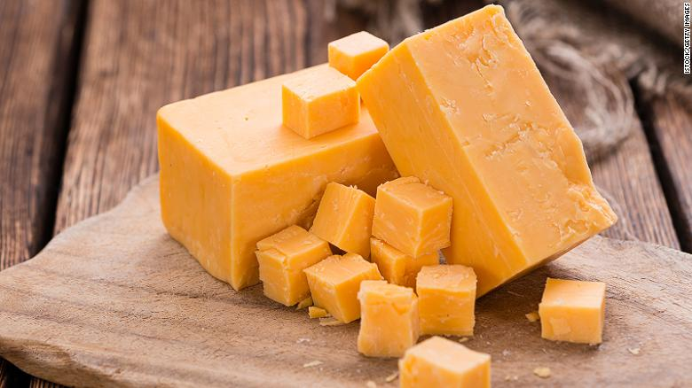

Cheddar Cheese
Cheddar cheese is a semi-hard cheese that originates from the city of Cheddar in Southwester England.

Cheddar Cheese's Color Debate
There is much controversy around the color of cheddar cheese. Most people nowadays will recognize cheddar because of the orange color. Currently all cheddar cheese without coloring will actually be white not orange. Historically, most cheeses from England were orange due to the beta-carotene in the grass that the cows ate. Orange cheese was actually a sign of quality showing that the cows were fed well and lived a natural life. In the 17th century the practice of skimming the cream off the milk began and that took away the orange color leaving only white milk. Since then people have been adding spices such as annatto to give it the rich orange color that we see in stores today.
Traditional Dishes using Cheddar Cheese
Some dishes traditionally prepared with Cheddar include: Macaroni and Cheese, Potatoes-au-Gratin, Cheeseburgers, Grits, Grilled-Cheese, and various Sandwiches.
More information to come soon!